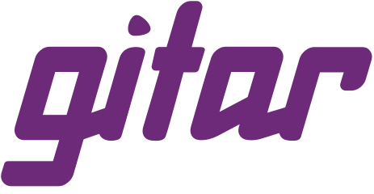

Gitar by Sonar
Every pull request reviewed against one rule: instrument it, then show it.

Track: Never Merge BrokenWhat we built
Gitar, Sonar's AI code verification agent, reviews pull requests on Hero Goggles' repos against our own rule: a change that adds behaviour must trace it, measure it, show it on the dashboard and log its failures. The same rule is given to the org's builder agent on Infrared, so the agent that writes the change and the agent that reviews it read the same standard.
How it works
hero-goggles/.gitar/rules/instrumentation.mdandinfluence-api/.gitar/rules/instrumentation.md: the rule, in four parts (trace it, measure its outcome, show it, log what a person needs at 3 a.m.).- A pull request that adds behaviour without them is not ready: Gitar says which of the four is missing and what to add.
- The live map's Integrations panel shows Gitar beside the other sponsors (
hero-goggles/src/live/Integrations.jsx).
Status
Live The rule in both repos, and Gitar installed on the org. Not live Gitar's remaining settings (allowing Infrared's bot, auto-apply off) were still open on 9 November 2026.